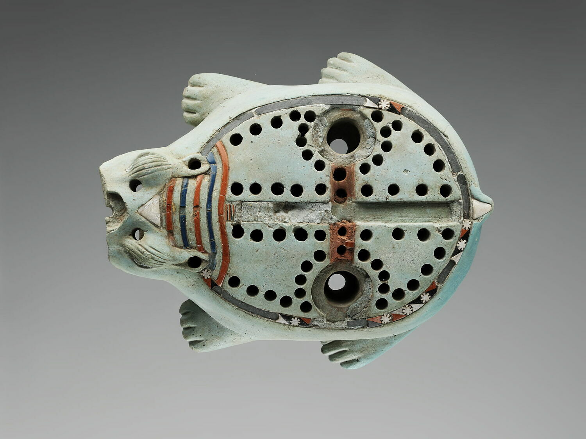

Plateau de jeu des 58 trous, en forme d'hippopotame
- Auteur: inconnu
- Date: 664-332 av. J.-C.
- Dimensions: 7,4 x 21,5 x 18 cm
- Matériaux: faïence siliceuse
- Lieu de conservation: Musée du Louvre, Paris
- © Musée du Louvre, Dist. GrandPalaisRmn/Benjamin Soligny
